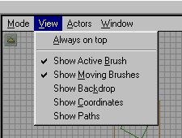

UnrealEd 2d View Menu

This menu will let you select which brushes are shown in the 2D view. The image above shows the default setting and this is where you will usually leave it. The check mark indicates it is set on. It should be self-evident what each does. The Active Brush is the Red brush and moving brushes are special brushes (like doors, lifts*). Backdrop and Coordinates do not apply, and Paths is used for showing the paths defined with path nodes (the paths that bots and monsters use to get round the level)--again, a future tutorial.
* Note: Moving brushes are ALWAYS rendered in "wire-frame" mode.